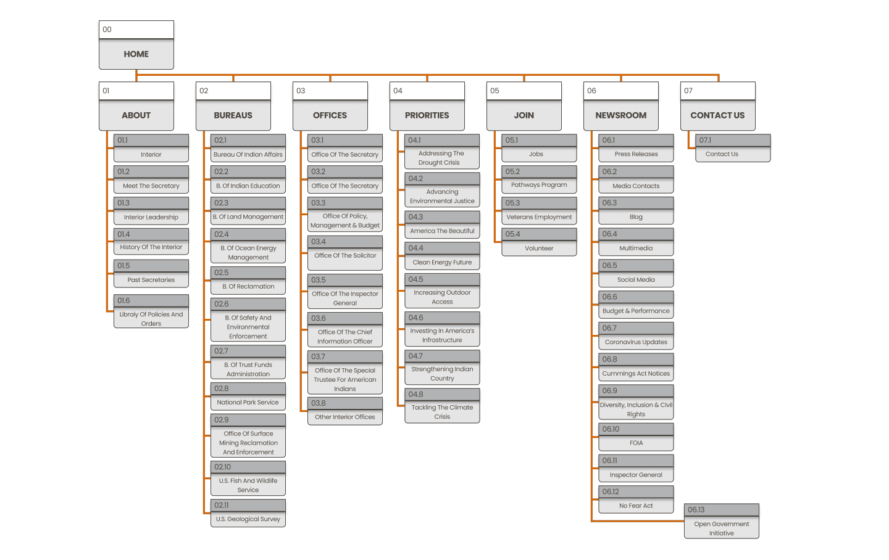

Opportunity
The Department of the Interior's current website poses significant challenges for users, including information overload due to excessive content and links, complex navigation, and inefficient content presentation. These issues hinder users in finding vital updates, policies, and resources related to the department's initiatives and programs, emphasizing the need for a comprehensive redesign to enhance user-friendliness and improve the overall web experience.
My Role
As the UX/UI designer, my role revolves around the extensive redesign of the Department of the Interior's website, with a primary focus on improving user experience and addressing existing challenges. This involves a comprehensive overhaul of the site's structure, interface, and content layout, all aimed at creating a seamless and user-friendly platform. The overarching goal is to enhance user satisfaction and comprehension, particularly for those who rely on the website for vital information regarding the department's wide-ranging initiatives and programs.

The Process
The Department of the Interior's website redesign aimed to enhance user-friendliness and organization. The goal was an intuitive website and app for updates and resources, developed over four weeks using Figma. Research guided the approach, including website analysis, user path study, and heuristic evaluations. Adjustments were made based on findings, such as dividing the Bureaus and Offices section. The iterative prototyping phase, shaped by user testing, resulted in an efficient and user-centric final design.
Typical Users
General public, researchers, academics, businesses, industries, environmental organizations, journalists, students and educators usually access to the website.
User Persona

Information Architecture

User Research & Findings
During the research phase, diverse methods were utilized such as detailed website analysis and mapping common user paths. This entails capturing screenshots from each page to uncover navigation trends and assess individual page design. Heuristic evaluations play a key role, providing a comprehensive review of information flow across the site's interface. These efforts establish a solid foundation for making informed, data-driven decisions in the project's later stages.
After interviewing 5 users on each stage and analyzing the navigation and footer flow using the card sorting method, a few changes were made to have a better user flow. The Department of the Interior's website contains too many links and information that are relevant to the users who need to find specific information. As a result, the Bureaus and Offices tab was split to have less content on each branch and facilitate the user's search.
Website Analysis
As part of the UX/UI redesign process for the Department of the Interior's website, the initial step involves a comprehensive website analysis. This systematic assessment aims to evaluate various critical aspects of the current website to gain valuable insights into its performance, user experience, design, and overall effectiveness. This analysis serves as the foundational stage, providing us with a clear understanding of where the website stands and what improvements are necessary to create an enhanced online presence that aligns with the department's goals and user expectations.
IA Card Sorting
.jpg)
Before - Card Sorting
● Too many links on each tab
● Contact us is hard to find
.jpg)
After - Card Sorting
● Secondary labels were created to distribute the information
● Used to evaluate IA
New Information Architecture

Ideation
By studying user navigation patterns on the website, targeted changes were introduced to improve how users move through the site and enhance its visual scanability. The Department of the Interior's website had a surplus of links and information, tailored to users seeking specific details. To address this, the Bureaus and Offices section were strategically divided, reducing content density on each, which streamlined how users retrieve information. These enhancements collaboratively work towards an optimized user experience, aligning seamlessly with the project's main goals.
Usability Testing
Following the completion of the mid-fidelity prototype, a series of user tests were conducted involving various stakeholders to gather insights. These tests provided invaluable feedback that supported the ongoing refinement of the prototype such as where to place important information, and how to organize the hierarchy of the content. The end result is a thoughtfully redesigned website, showcasing improved navigational efficiency and a strong alignment with user-centric design principles.
Wireframes iteration
The iteration process involved gathering valuable insights from usability testing, including interviews and card sorting. Feedback led to adjustments, such as splitting the Bureaus and Offices section, improving user flow. Continuous refinement through iterative prototyping resulted in an efficient and user-centric final design, ensuring alignment with user-centric principles.
Prototype
The prototype effectively addressed the initial problem statement by streamlining the user experience. Through iterative testing, insights were gained and applied, resulting in improvements such as:
● Clearer visual cues for clickable elements
● Optimized carousel speed for better information absorption
● Integration of interactive elements with subtle cursor-triggered
These refinements collectively contributed to:
● More user-friendly and efficient website
● Aligns with the project's user-centric design principles
● Solves the user frustration and confusion
This final phase of the interactive prototype played a pivotal role in refining and elevating the product, leveraging real-world insights and user interactions to ensure optimal design and functionality.